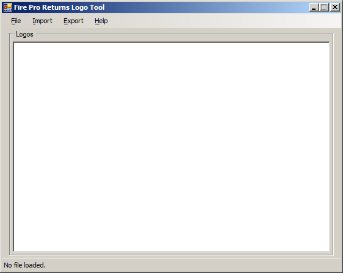
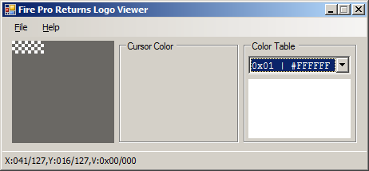
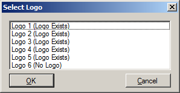

Introduction
FPRLogoViewer allows you to view logos from Fire Pro Wrestling Returns save data.
Requirements
- .NET Framework v2.0 (so it should hopefully work in Wine)
Supported Formats
There are a myriad of PS2 save formats out there, and FPRLogoViewer only supports a few of them.
- EMS Memory Linker (.psu) – A single game save, 952,320 bytes in length.
-
Raw save data – Raw save data (913,892 bytes length)
ripped from the memory card. Typically has one of three names depending on
the game/save region:
- BISLPM-66082 – NTSC-J/Japanese
- BASLUS-21702 – NTSC-U/North American
- BESLES-55041 – PAL/Europe
- Raw logo rips (.bin) – 16,656 bytes of logo data, ripped from a save file.
Usage
(todo)
Default View
The default view upon starting the program.
Open Logo
The File → Open menu item allows you to open a supported file format containing one or more Fire Pro Wrestling Returns logos.
Save Logo
The File → Save menu item allows you to export the logo to a PNG file.
Logo View
When a logo is loaded,
Select Logo
When opening a save file, you can choose what logo is loaded.
